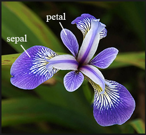
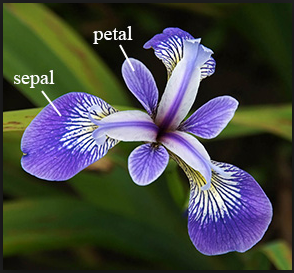

How are data stored, how do we use them?
Often, data are in an Excel sheet, or a plain text file (.csv, .txt)
.csv files open in Excel automatically, but actually are plain textUsually, columns are variables/measures and rows are observations (i.e. a person’s measurements)
Data in R
We can import data from many file types, including .csv, .txt., and .xlsx
We will cover this on a later date
Once imported, R typically stores data as data frames , or tibbles if using the tidyverse package (more on this later).
For our purposes, these are essentially the same, and I will tend to use the terms interchangeably.
These are examples of what we call object types in R.
Data frame example
<- data.frame (IDs= 1 : 3 , gender= c ("male" , "female" , "Male" ), age= c (28 , 35.5 , 31 ),trt = c ("control" , "1" , "1" ),Veteran = c (FALSE , TRUE , TRUE )
IDs gender age trt Veteran
1 1 male 28.0 control FALSE
2 2 female 35.5 1 TRUE
3 3 Male 31.0 1 TRUE
Vectors vs. data frames
a data frame is a collection (or array or table) of vectors
Different columns can be of different data types (i.e. numeric vs. text)
Both numeric and text can be stored within a column (stored together as text ).
Vectors and data frames are examples of objects
There are other types of R objects to store data, such as matrices, lists.
Observations & variables
IDs gender age trt Veteran
1 1 male 28.0 control FALSE
2 2 female 35.5 1 TRUE
3 3 Male 31.0 1 TRUE
Book refers to a dataset as a data matrix
Rows are usually observations
Columns are usually variables
How many observations are in this dataset?
What are the variable types in this dataset?
Variable (column) types
integer
discrete
integer-valued numbers
double or numeric
continuous
numbers that are decimals
factor
categorical
categorical variables stored with levels (groups)
character
categorical
text, “strings”
logical
categorical
boolean (TRUE, FALSE)
View the structure of our data frame to see what the variable types are:
'data.frame': 3 obs. of 5 variables:
$ IDs : int 1 2 3
$ gender : chr "male" "female" "Male"
$ age : num 28 35.5 31
$ trt : chr "control" "1" "1"
$ Veteran: logi FALSE TRUE TRUE
Fisher’s (or Anderson’s) Iris data set
Data description:
n = 150
3 species of Iris flowers (Setosa, Virginica, and Versicolour)
50 measurements of each type of Iris
variables :
sepal length, sepal width, petal length, petal width, and species
Can the iris species be determined by these variables?
Gareth Duffy
View the iris dataset
The iris dataset is already pre-loaded in base R and ready to use.
Type the following command in the console window
Warning: this command cannot be rendered. It will give an error.
A new tab in the scripting window should appear with the iris dataset.
Data structure
What are the different variable types in this data set?
str (iris) # structure of data
'data.frame': 150 obs. of 5 variables:
$ Sepal.Length: num 5.1 4.9 4.7 4.6 5 5.4 4.6 5 4.4 4.9 ...
$ Sepal.Width : num 3.5 3 3.2 3.1 3.6 3.9 3.4 3.4 2.9 3.1 ...
$ Petal.Length: num 1.4 1.4 1.3 1.5 1.4 1.7 1.4 1.5 1.4 1.5 ...
$ Petal.Width : num 0.2 0.2 0.2 0.2 0.2 0.4 0.3 0.2 0.2 0.1 ...
$ Species : Factor w/ 3 levels "setosa","versicolor",..: 1 1 1 1 1 1 1 1 1 1 ...
Data set summary
Sepal.Length Sepal.Width Petal.Length Petal.Width
Min. :4.300 Min. :2.000 Min. :1.000 Min. :0.100
1st Qu.:5.100 1st Qu.:2.800 1st Qu.:1.600 1st Qu.:0.300
Median :5.800 Median :3.000 Median :4.350 Median :1.300
Mean :5.843 Mean :3.057 Mean :3.758 Mean :1.199
3rd Qu.:6.400 3rd Qu.:3.300 3rd Qu.:5.100 3rd Qu.:1.800
Max. :7.900 Max. :4.400 Max. :6.900 Max. :2.500
Species
setosa :50
versicolor:50
virginica :50
Data set info
[1] "Sepal.Length" "Sepal.Width" "Petal.Length" "Petal.Width" "Species"
View the beginning or end of a dataset
Sepal.Length Sepal.Width Petal.Length Petal.Width Species
1 5.1 3.5 1.4 0.2 setosa
2 4.9 3.0 1.4 0.2 setosa
3 4.7 3.2 1.3 0.2 setosa
4 4.6 3.1 1.5 0.2 setosa
5 5.0 3.6 1.4 0.2 setosa
6 5.4 3.9 1.7 0.4 setosa
Sepal.Length Sepal.Width Petal.Length Petal.Width Species
145 6.7 3.3 5.7 2.5 virginica
146 6.7 3.0 5.2 2.3 virginica
147 6.3 2.5 5.0 1.9 virginica
148 6.5 3.0 5.2 2.0 virginica
149 6.2 3.4 5.4 2.3 virginica
150 5.9 3.0 5.1 1.8 virginica
Specify how many rows to view at beginning or end of a dataset
Sepal.Length Sepal.Width Petal.Length Petal.Width Species
1 5.1 3.5 1.4 0.2 setosa
2 4.9 3.0 1.4 0.2 setosa
3 4.7 3.2 1.3 0.2 setosa
Sepal.Length Sepal.Width Petal.Length Petal.Width Species
149 6.2 3.4 5.4 2.3 virginica
150 5.9 3.0 5.1 1.8 virginica
The $
Suppose we want to single out the column of petal width values.
One way to do this is to use the $
[1] 0.2 0.2 0.2 0.2 0.2 0.4 0.3 0.2 0.2 0.1 0.2 0.2 0.1 0.1 0.2 0.4 0.4 0.3
[19] 0.3 0.3 0.2 0.4 0.2 0.5 0.2 0.2 0.4 0.2 0.2 0.2 0.2 0.4 0.1 0.2 0.2 0.2
[37] 0.2 0.1 0.2 0.2 0.3 0.3 0.2 0.6 0.4 0.3 0.2 0.2 0.2 0.2 1.4 1.5 1.5 1.3
[55] 1.5 1.3 1.6 1.0 1.3 1.4 1.0 1.5 1.0 1.4 1.3 1.4 1.5 1.0 1.5 1.1 1.8 1.3
[73] 1.5 1.2 1.3 1.4 1.4 1.7 1.5 1.0 1.1 1.0 1.2 1.6 1.5 1.6 1.5 1.3 1.3 1.3
[91] 1.2 1.4 1.2 1.0 1.3 1.2 1.3 1.3 1.1 1.3 2.5 1.9 2.1 1.8 2.2 2.1 1.7 1.8
[109] 1.8 2.5 2.0 1.9 2.1 2.0 2.4 2.3 1.8 2.2 2.3 1.5 2.3 2.0 2.0 1.8 2.1 1.8
[127] 1.8 1.8 2.1 1.6 1.9 2.0 2.2 1.5 1.4 2.3 2.4 1.8 1.8 2.1 2.4 2.3 1.9 2.3
[145] 2.5 2.3 1.9 2.0 2.3 1.8
Example using the $
The $ is helpful if you want to create a new dataset for just that one variable, or, more commonly, if you want to calculate summary statistics for that one variable.
Inline code
With markdown you can also report R code output inline with the text instead of using a chunk.
Output:
The mean petal width for all 3 species combined is 1.2 (SD = 0.8) cm.
Reporting summary statistics this way in a report, makes the numbers computationally reproducible.
For example, if this were for an abstract and a year later you are wondering where the numbers came from, your R code will tell you exactly which dataset was used to calculate the values.
 
